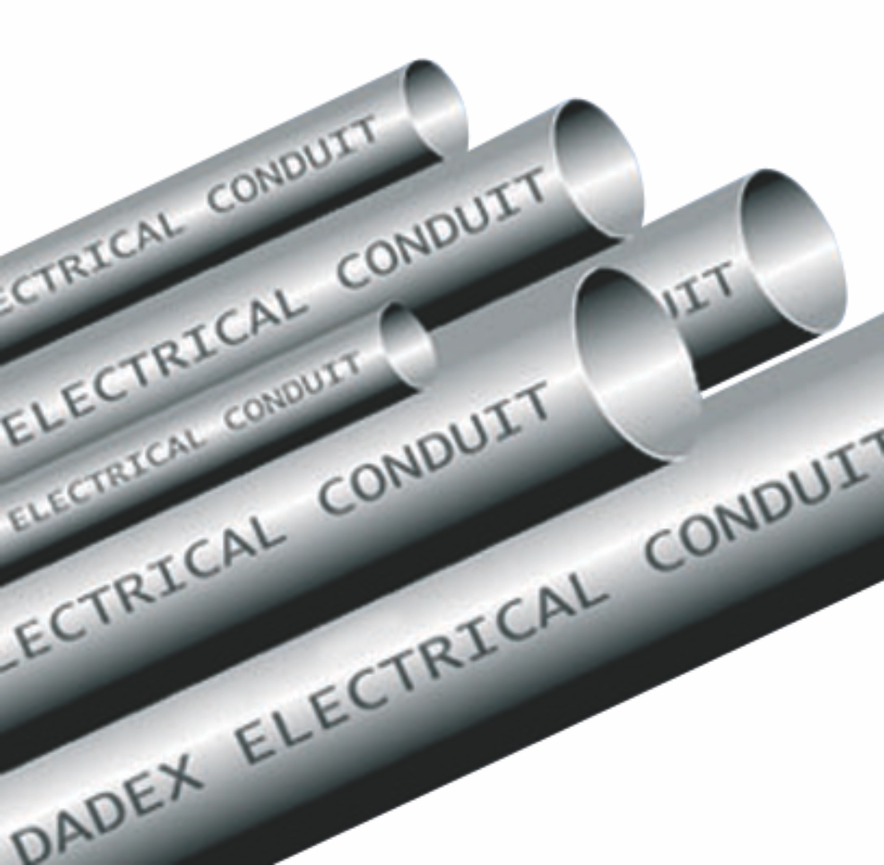

Approved documentation
Specifications and technical requirements should be verified against the latest approved Dadex documentation.
UPVC Electrical Conduits
A UPVC electrical conduit system for concealed and surface wiring in buildings.

Electrical Conduits from Dadex are UPVC pipes used for routing and protecting electrical wiring in buildings. The smooth interior and uniform shape support easy cable pulling, while the material resists heat, rust, chemical attack and decomposition. Suitable for concealed-in-concrete and underground installation.
Technical information is presented openly. Essential information is not hidden behind an accordion.
| Material | Unplasticised polyvinyl chloride (UPVC). |
|---|---|
| Appearance | Grey colour. |
| Standards & Specifications | Product dimensions and material grades are specified in the Dadex product booklet for this system. Confirm the applicable standard with Dadex Technical Support before specification. |
| Available Range | Diameters ¾″, 1″, 1¼″, 1½″ and 2″ in lengths of 3m. |
| Jointing Method | Detailed jointing and installation guidance is available from Dadex Technical Support. |
Specifications and technical requirements should be verified against the latest approved Dadex documentation.
Dadex Techno Commercial Department and Sales Offices can assist with product selection and technical information.
Confirm system suitability, installation requirements and limitations for the intended application before specification.
Approved product literature, technical documents and drawings can be connected here as the resource library is finalized.
Contact Dadex for product information and technical assistance.